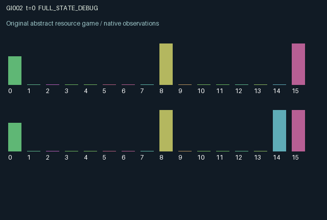

GI002 / LEGACY_ARRAY
Reservoir with delayed pollution and living restoration
2 agents5 actions16 observation columns32 original horizonRuntime: PASS
Release verification episode
Untrained uniform legal actions. Actual JAX state sampled along the full original episode; full-state debug camera. No human performance or learning claim.

Run this game
crucibles play --game 2
Start Python locally, then open the address printed by the terminal. Installation, multiplayer, takeover and keyboard controls →
Objective, rewards & ending
Exact task contract
{
"termination": "Original kernel t >= 32; see mechanism and source"
}Declared per-step reward bounds: -1.0 to 1.0. Observability: source_defined.
Rules
Original mechanism document (historical status wording retained)
# Reservoir with delayed pollution and living restoration Status: authored proposal, not executed or validated. Agents share a bounded reservoir and pollution stock. Gentle or intensive pumps request different water amounts. If demand exceeds water, both demands are scaled by the same rationing factor. Intake pays according to the old water quality. Intensive pumping creates runoff that reaches pollution one transition later, so immediate extraction can damage future value after an observable lag. Planting grows an agent's bounded root stock, which decays and is damaged by intensive pumping. Old roots jointly improve replenishment and reduce pollution. Filtering pays a private cost and immediately reduces next-state pollution. Root benefits therefore arrive after investment; clean water and replenishment are shared. Both agents influence common persistent state, and their simultaneous water demands compete. All physical state is public: water, pollution, pending runoff, both root stocks, both recent intakes, both previous actions, time, and role. Actions are always legal, including pumping an empty reservoir. Benefits are at most 0.32 per agent per step; planting and filtering cost 0.07 and 0.05 respectively, so each reward stays within [-1,1]. This is intentionally a generic common-pool-resource and public-restoration mechanism with a delayed externality. No assertion of novelty, nonisomorphism, eligibility, compilation, or scientific effectiveness is made. Only initial water uses the explicit random key. The time limit is 32 transitions, with no internal reset.
Commands
0Action 0; see mechanism and source
1Action 1; see mechanism and source
2Action 2; see mechanism and source
3Action 3; see mechanism and source
4Action 4; see mechanism and source
Roles & abilities
agent_0 Original legacy agent; see mechanism and source
agent_1 Original legacy agent; see mechanism and source
Observation permissions
Training receives only the original observation rows. Role cameras use declared visibility; debug cameras are explicitly marked. Local benchmark records log debug exposure and role takeover history.
Exact observation layout
[]
Entity visibility & attributes
[]
Actual verification & provenance
Per-game execution receipt
{
"game": "gi002",
"status": "PASS",
"verification_revision": 2,
"source_sha256": "63c029e691ff9cb8ef25b4625bdbb156bd7e69c0d21eac6e3d864353287b4b48",
"seed": 20261101,
"runtime": {
"jax": "0.4.38",
"numpy": "1.26.4",
"devices": [
"TFRT_CPU_0"
]
},
"dimensions": {
"num_agents": 2,
"observation_size": 16,
"num_actions": 5,
"max_steps": 32
},
"checks": {
"eager_reset": {
"status": "PASS",
"seconds": 0.5648703575134277
},
"observation_spaces_legal_masks": {
"status": "PASS",
"seconds": 0.13170361518859863
},
"eager_step": {
"status": "PASS",
"seconds": 0.48698925971984863
},
"jit_reset": {
"status": "PASS",
"seconds": 0.12279391288757324
},
"jit_step": {
"status": "PASS",
"seconds": 0.19599652290344238
},
"eager_jit_integer_parity_float_measurement": {
"status": "PASS",
"seconds": 0.0005247592926025391
},
"jit_vmap_reset": {
"status": "PASS",
"seconds": 0.17850422859191895
},
"jit_vmap_step": {
"status": "PASS",
"seconds": 0.20286035537719727
},
"outer_autoreset_api": {
"status": "PASS",
"seconds": 0.3885042667388916
},
"full_original_horizon_episode_and_render": {
"status": "PASS",
"seconds": 0.915982723236084
}
},
"human_scores": null,
"browser_controls": "PENDING",
"failures": [],
"elapsed_seconds": 3.7425808906555176,
"float_parity_max_abs": 0.0,
"numerical_parity": "EXACT",
"raw_terminal_absorbing": "NOT_PART_OF_ORIGINAL_LEGACY_CONTRACT",
"terminal_outer_reset": "PASS",
"episode_steps": 32,
"scripted_random_returns": [
1.0779566157143563,
0.46265843766741455
],
"terminal": true,
"demo_information": "FULL_STATE_DEBUG",
"demo_frames": 33,
"render_roles_checked": 2
}Chromium control verification
{
"game": "gi002",
"status": "PASS",
"human_scores": null,
"engineering": true,
"checks": [
"catalog_selected_and_real_native_reset",
"dom_queue_and_native_step",
"second_participant_ownership_and_native_joint_step",
"all_roles_individually_controllable_no_role_cap",
"explicit_debug_camera",
"release_to_pure_ai_without_reset"
],
"ui_sha256": "15b5861d23b3c42811865c954d5a988280bbfd21cf8e93754be2437a027158c5",
"seconds": 2.464444160461426
}Original identity and file hashes
{
"id": 2,
"key": "gi002",
"title": "Reservoir with delayed pollution and living restoration",
"summary": "",
"tags": [],
"family": "legacy_array",
"dimensions": {
"num_agents": 2,
"observation_size": 16,
"num_actions": 5,
"max_steps": 32
},
"source_sha256": "63c029e691ff9cb8ef25b4625bdbb156bd7e69c0d21eac6e3d864353287b4b48",
"manifest_sha256": "ed41ac28fcc67e46fe205f9e22c43ba2ab1fc226684ffecaf1dbc6627da02b67",
"files": [
{
"file": "candidate.py",
"sha256": "63c029e691ff9cb8ef25b4625bdbb156bd7e69c0d21eac6e3d864353287b4b48",
"bytes": 3234,
"origin": "work/exp_2/astra_generation/discovery_v2/initial/candidate_00002/attempt_00/candidate.py"
},
{
"file": "mechanism.md",
"sha256": "33f1abacbfe2a92f81b3bb193b09ae612623bbac06c5e9f8bfdc80ed3de6c10c",
"bytes": 1594,
"origin": "work/exp_2/astra_generation/discovery_v2/initial/candidate_00002/attempt_00/mechanism.md"
}
],
"original_status": "LEGACY_SOURCE",
"original_saved_replay": false,
"release_validation": "PASS",
"human_scores": null,
"browser_validation": "PASS"
}